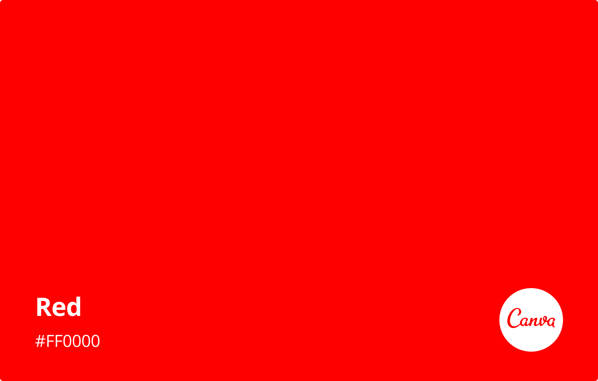
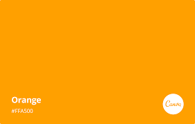
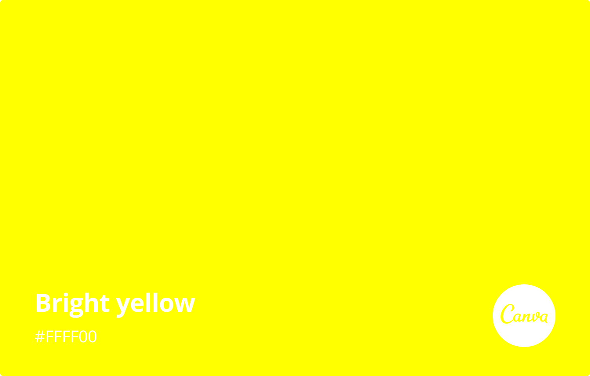
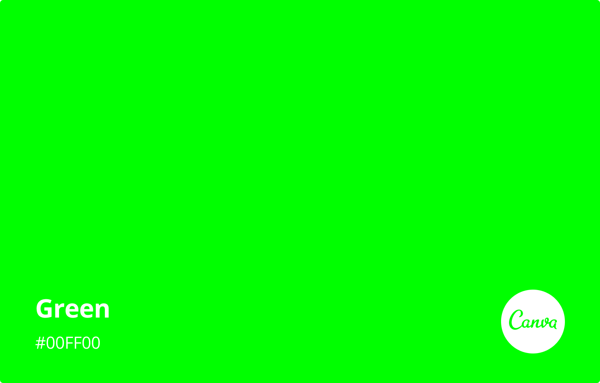
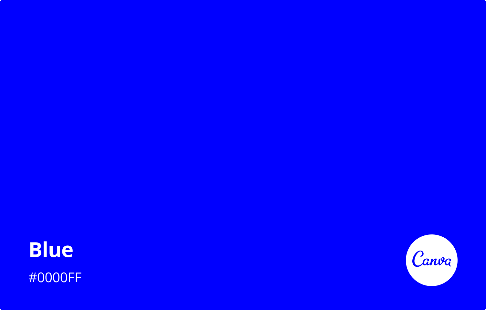
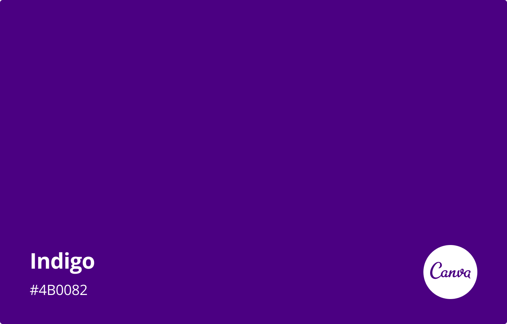
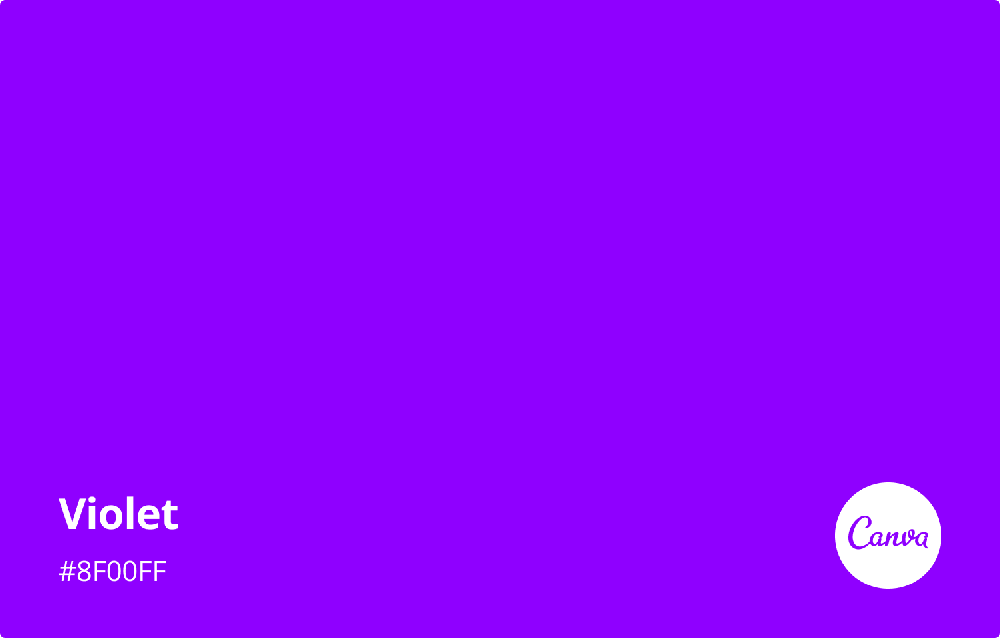

The rainbow is one of nature's most beautiful phenomena, captivating observers with its vibrant spectrum of colours. A rainbow is formed when sunlight interacts with water droplets in the atmosphere, creating a display of colours that have been celebrated and studied for centuries. The seven colours that typically appear in a rainbow—red, orange, yellow, green, blue, indigo, and violet—are often remembered by the mnemonic “ROYGBIV.” These colours represent the visible spectrum of light and reveal the complex physics behind the rainbow’s creation. At the heart of the rainbow’s formation lies the process of refraction. When sunlight passes through a water droplet, it bends or refracts, causing the different wavelengths of light to separate. This phenomenon occurs because light travels at different speeds through different mediums. The various colours of light have different wavelengths, with red having the longest and violet the shortest. After light refracts inside the droplet, it reflects off the back surface and exits the droplet, bending again as it passes from the water to the air. This sequence of refraction, reflection, and refraction causes the light to spread out into a spectrum, creating the familiar arc of colours that we see as a rainbow. The colours in a rainbow appear in a specific order, starting with red on the outer edge and progressing to violet on the inner edge. This order is due to the varying angles at which different wavelengths of light are refracted. Shorter wavelengths (like violet) are bent at a greater angle than longer wavelengths (like red), which is why red appears on the top and violet on the bottom of the rainbow. The seven colours of the rainbow each have distinct characteristics and cultural meanings. The first colour, red, is the most energetic, associated with passion, warmth, and intensity. Red has the longest wavelength of visible light and is often the colour most easily seen in a rainbow. It represents strong emotions, both positive and negative, and can symbolize everything from love to danger. Next is orange, a colour that blends the warmth of red with the brightness of yellow. Orange often evokes feelings of enthusiasm, creativity, and energy. It is a colour of transition and change, representing the balance between intensity and happiness. Yellow, the colour of sunlight, is the brightest and often seen as a symbol of optimism, happiness, and vitality. It has a wavelength just above orange and is associated with joy and energy. Yellow is a colour that can stimulate mental activity and bring a sense of warmth and cheer. Green, the colour of nature and life, is next. It symbolizes growth, renewal, and harmony. Green has a calming effect and is often linked to health, fertility, and balance. It is also the colour most prevalent in the natural world, representing the abundance of plant life and the earth’s richness. Blue, the colour of the sky and the ocean, represents tranquility, peace, and stability. It is a calming colour that promotes a sense of calm and trust. Blue is often associated with loyalty, wisdom, and serenity, and it has a wavelength shorter than green. Indigo is a deep blue-purple colour that is sometimes overlooked but holds significant meaning. It represents intuition, perception, and spirituality. Indigo can evoke feelings of mystery and depth, and while it’s less common in everyday use, it adds richness to the rainbow’s spectrum. Finally, violet, the colour with the shortest wavelength in the visible spectrum, often symbolizes luxury, creativity, and spirituality. It is a colour that can stimulate the imagination and is historically associated with royalty and nobility due to its rarity in nature.